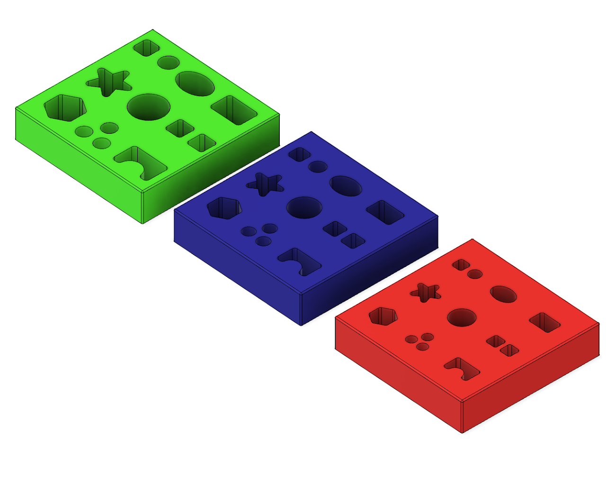
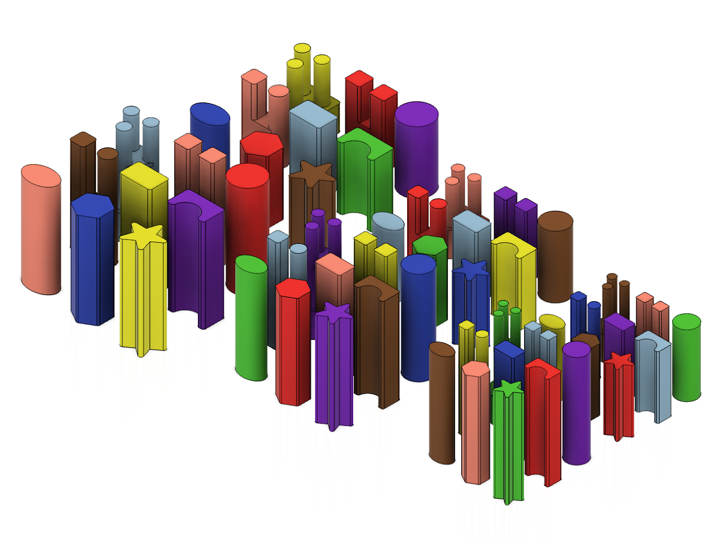

The equipment used in our project is entirely available online or 3D printed. We have included the links to purchase the equipment and 3D printing filament as well as the CAD files below.
This master spreadsheet contains all the equipment needed and how to obtain them. Each section of the spreadsheet is detailed below.
Purchased Equipment
Links to purchase the required equipment can be found here.
Basic Task Pieces
We designed a series of basic assembly task boards with 9 slots for different shaped pieces and different sizes as well as 54 pegs of different shapes, sizes, lengths, and colors. You can choose to print all or some of these suitable for your task. In addition, we designed an environment fixture for reorienting the pieces before insertion if they are grasped horizontally.
Refer to
color/shape name and number reference sheet for the name and number assigned to each shape and color throughout our project.

Assembly Boards
Set of 3 boards with 9 holes each. Each board has different sized holes

Insertion Policies
Set of pegs of three sizes, two lengths, and 9 shapes each for a total of 54 pegs.
Novel Objects for Grasping (Optional)
In addition to the original 54 insertion pieces, we designed 5 novel objects of different sizes, shapes, and colors to study the generalization abilities of the grasp policy.
In addition to the three basic insertion task boards, we introduce two more complex assembly boards where interlocking pieces need to be assembled in a specific order.
Camera Mounts
We designed two types of camera mounts for the RealSense D405 cameras. One is used to mount the camera in a fix position pointing at the workspace, while the other is mounted between the flange and the gripper of the Franka Panda arm for a eye-in-hand view.